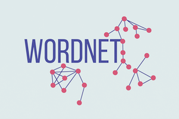

My Projects
-
Solar Capital

This project began in the summer of 2023 after my rommmates and I unsuccessfully applied to the big quant trading firms. Since we couldn't get into a trading firm we decided to make our own. This project is part joke and part testbed for us to learn new things.
Since we didn't (and still don't) know anything about trading we decided to stick with making a minimum viable product and upgrading iteratively. Right now our trading decision engine only focuses on making a single trade per day by looking at the relative strength index and only trading between fixed values.
We're also working on a noSQL database that can store the context of trades amd what the decision engine's output -buy, hold, or sell.
-
New Instance Types Notifier
I developed the New Instance Types Notifier while I interned at AWS for EC2’s Static Stability team during the summer of 2023. The Notifier is a workflow automation microservice designed to eliminate a weekly chore for the Static Stability team and allow them to focus on the team’s important problems.
I received my project in June 2023 and was responsible for developing it from end-to-end, including collecting requirements from my team, writing and rewriting my design document, and developing and iterating upon the end product. The notifier had two parts, one ran autonomously on EC2 and sent email updates to the team every week. The other part was mounted on the team’s dashboard and integrated with its backend API.
The notifier worked by collecting new EC2 types from several different internal services and fused the information together. Then it sorted out the instance types already ingested into the team’s testing framework. The dashboard displayed the list as is but the email notifier divided the list further into instance types with recently updated launch dates that merited further attention.
-

Nym Jumper
I was inspired to make this game by playing the New York Time’s crossword puzzle with my ski club on our trips. I knew I wanted to make a game that I could imagine my teammates playing. I based the game on the wikipedia game where a person uses links between wikipedia pages to navigate the site between a beginning and destination page. However with this game a person uses synonyms or antonyms between words to jump to a destination word.
To make the game I used python's FastAPI library to create a barebones API that can query Natual Language Tool Kit's (NLTK) wordnet library to find a list of synonyms and antonyms for words. The synonyms are in lists called synsets that have distinct semmantic meanings. I made the game itself in react and it sends API calls every time the play wants to move to a new word.